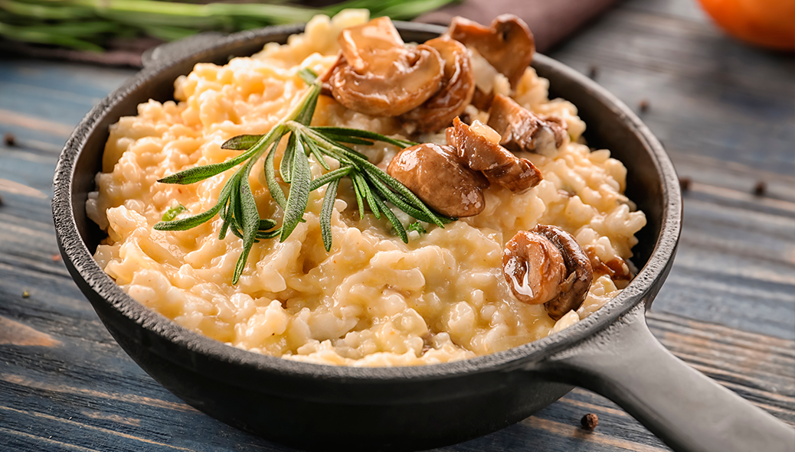

Categorias de Receitas
Entradas
Deliciosas opções para começar sua refeição

Pratos Principais
Receitas saborosas para o prato principal
Sobremesas
Doces irresistíveis para finalizar sua refeição
Receita em Destaque

Risoto de Cogumelos
Tempo de preparo: 40 minutos
Porções: 4
Ingredientes:
- 300g de arroz arbóreo
- 200g de cogumelos variados
- 1 cebola picada
- 2 dentes de alho picados
- 1/2 xícara de vinho branco seco
- 4 xícaras de caldo de legumes quente
- 50g de manteiga
- 50g de queijo parmesão ralado
- Sal e pimenta a gosto
- Azeite de oliva
Modo de Preparo:
- Em uma panela, aqueça o azeite e refogue a cebola e o alho até ficarem transparentes.
- Adicione os cogumelos e refogue por alguns minutos.
- Acrescente o arroz e mexa bem para envolver os grãos com o azeite.
- Despeje o vinho branco e mexa até evaporar.
- Comece a adicionar o caldo de legumes, uma concha por vez, mexendo constantemente.
- Continue adicionando o caldo e mexendo até o arroz ficar al dente (cerca de 18-20 minutos).
- Retire do fogo e adicione a manteiga e o queijo parmesão. Misture bem.
- Tempere com sal e pimenta a gosto.
- Sirva imediatamente, decorando com cogumelos frescos e salsinha, se desejar.